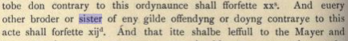

Женщины и масонство
Женщина, которая не боится темноты и смерти, достойна и будет посвящённой.
Вольфганг Амадей Моцарт
«Волшебная флейта»
Уже больше ста лет масонское посвящение открыто для женщин, и они вступают в масонские ложи наравне с мужчинами. Но при этом вопрос, могут ли женщины быть масонами, до сих пор время от времени поднимается и горячо обсуждается в разных кругах.
Традиционное спекулятивное масонство XVIII века действительно было доступно только мужчинам. Однако, в настоящее время во всем мире и в частности в России работает масса масонских послушаний, которые принимают в свои ряды женщин
Прослеживая историю королевского искусства, начиная со средневековых гильдий вольных каменщиков, можно увидеть, что вход женщинам в масонство был закрыт лишь в XVIII веке, да и то ненадолго.
Женщины в средневековых гильдиях ремесленников
Вопреки расхожему мнению о том, что оперативными каменщиками были только мужчины, существуют документальные свидетельства о членстве женщин в средневековых каменщических гильдиях.
Несколько примеров.
1389 год. В сертификате, выданном одной из гильдий каменщиков города Линкольн, явным образом говорится о членах гильдии обоего пола — «братья и сестры».
В документе 1449 года, озаглавленном как «Постановления о ремеслах» («Ordinances of Crafts») г.Норвича, говорится об учениках каменщиков и в мужском, и в женском роде: «And euery other broder or sister of eny gilde…» («И любой другой брат или сестра любой гильдии…») «And that he or she be of fre berthe» («И что он или она должны быть свободны»)
В более позднем манускрипте Йорка #4 1693 года описывается принесение клятвы при посвящении, и также используются как мужской, так и женский род (хотя кое-кто и предпочитает считать это опечаткой): “The one of the elders takeing the Booke and that hee or shee that is to be made mason shall lay their hands thereon, and the charge shall be given.”
Есть упоминания о женщинах в оперативном масонстве и в XVIII веке. К примеру, запись о некой Мэри Банистер, дочери цирюльника из города Баркинг, которая в 1714 году была назначена учеником-масоном на 7-летний срок после уплаты 5 шиллингов.
Женщины в спекулятивном масонстве XVIII века
Нужно отметить, что на момент возникновения масонства в том виде, к которому мы привыкли, говорить о женском равноправии не приходилось. Женщины в обществе полностью зависели от мужчин — отцов или супругов, чаще всего не получали образования и, строго говоря, не могли считаться свободными.
Однако даже в те времена были исключения. Самой известной женщиной, получившей масонское посвящение, была Элизабет Олдворт (в девичестве Сэнт Леджер), посвященная в спекулятивной ложе в 1712 году.
И только в двадцатых годах XVIII века, формулируя постулаты спекулятивного масонства в своих знаменитых Конституциях, преподобный Джеймс Андерсон (действуя, впрочем, от лица свежепровозгласившей себя Великой Ложи Англии) официально запретил женщинам вступать в масонские ложи.
Ложи адопции и Орден Восточной Звезды
В течение некоторого времени, пока в обществе преобладали патриархальные отношения, спекулятивное масонство оставалось прерогативой свободных мужчин доброго нрава, преимущественно дворянского происхождения и христианского вероисповедания. Их жены, матери, сестры и дочери к посвящению не допускались, однако при некоторых мужских ложах создавались так называемые ложи адопции, работавшие по специально разработанным для них ритуалам (не масонским).
Позже стали появляться парамасонские организации — не только для женщин, но и для детей масонов. Например, Орден Мопса или существующий по сей день Орден Восточной Звезды.
Во второй половине VIII века Жан-Батист Виллермоз посвятил в Орден избранных коэнов свою сестру Клодину-Терезу, известную как мадам Провансаль, глубоко интересовавшуюся мистикой и ставшую впоследствии доверенным лицом Виллермоза. По этому поводу церемония была адаптирована для женщин, и впоследствии в Ордене избранных коэнов была учреждена женская ложа.
В 1778 году в Бостоне, США усилиями Ханны Мэтер Крокер, эссеистки и защитницы прав женщин, чей супруг был масоном, была учреждена предназначенная специально для женщин «ложа Святой Анны» в Бостоне, основанная на тех же принципах, что и мужские масонские ложи.
Отдельно следует отметить ложу La Loge de Juste, которая была основана в Гааге в 1751. В отличие от адопционных лож La Loge de Juste работала не по отдельным ритуалам, а приняла принцип гендерного равенства как основополагающий и адаптировала масонские ритуалы таким образом, чтобы «ее члены и мужского, и женского пола могли выражать равенство, братство и обоюдное стремление к добродетели и мудрости».
Мария Дерэм и Орден LE DROIT HUMAIN («Право Человека»)
Все изменилось во второй половине XIX века, когда вместе с научным и техническим прогрессом произошли и значительные изменения в обществе, воплощающие идеи социального равенства для всех, включая женщин.
Особенно активно развивались общественные движения во Франции усилиями либеральной республиканской буржуазии. Увеличивалось количество феминистических обществ, в которых состояли не только женщины, но и прогрессивно мыслившие мужчины, политики и франкмасоны. Одной из активных деятелей этого движения была феминистка, писательница, журналистка Мария Дерэм, учредившая в 1866 году Общество защиты прав женщин.
Вопрос обретения женщинами всей совокупности прав наравне с мужчинами поднимали не только общественные организации, но и масонские ложи, поскольку равенство — одна из основополагающих масонских ценностей. Эту идею продвигал и Великий Восток Франции, который в 1868 году в ответ на антимасонские и антифеминистические атаки принял решение провести несколько конференций для разъяснения обществу своей точки зрения. Первый цикл конференций было предложено провести Марии Дерэм, которая использовала эту возможность, чтобы донести до общества голос женщин.
Спустя несколько лет Жорж Мартен — врач, парижский муниципальный советник, стал одним из основателей Великой Символической Шотландской Ложи. Он поддержал братьев ложи «Вольнодумцы» на Востоке города Пек, когда они приняли решение посвятить Марию Дерэм во франкмасонство.
Церемония посвящения состоялась 14 января 1882 года. И несмотря на то, что первая реакция на посвящение Марии Дерэм была отрицательной, оно стало важнейшей поворотной точкой, и именно эта дата считается отправной в истории возникновения Ордена «Право Человека» и смешанного масонства.
Возглавив ложу «Новый Иерусалим» Великой Символической Шотландской Ложи, Жорж Мартен обратился к различным масонским послушаниям с предложением создать смешанные ложи, но после их уклончивых ответов начал действовать самостоятельно. В мае 1987 года ложа «Новый Иерусалим» разработала проект смешанных лож, и, так как Великая Символическая Шотландская Ложа не поддержала эту идею, Мария Дерэм и Жорж Мартен приняли решение учредить смешанную ложу, независимую от всех послушаний.
Первыми посвященными и учредительницами новой ложи стали 16 известных феминисток. 4 апреля 1893 года Брат и Сестры-основатели подписали хартию Великой символической шотландской смешанной ложи Франции Le Droit Humain («Право Человека»), которая была признана французским законодательством. Эта ложа стала материнской для Масонского смешанного международного ордена LE DROIT HUMAIN.
Женщины в масонстве в наше время
Несмотря на то, что ландмарка о масонстве только для мужчин до сих пор бытует в так называемых «регулярных» ложах, в настоящее время существует множество либеральных послушаний, открытых для женщин, которые хотят стать масонами. Это послушания, которые уже на протяжении долгих лет ведут свои работы и обеспечивают тщательную передачу Традиции своим адептам. Одни из них являются смешанными, иные допускают к посвящению только женщин (по аналогии с «традиционным» мужским масонством). Либеральные послушания, имеющие взаимное признание, время от времени совместно проводят собрания для Сестер и Братьев, а также мероприятия, открытые для широкой аудитории. Некоторые из этих послушаний, включая Орден LE DROIT HUMAIN, представлены и в России.
Кто такая женщина-масон?
Это женщина, прошедшая масонскую инициацию и состоящая в одной или нескольких масонских ложах. Это совершеннолетняя женщина добрых нравов, свободная от предрассудков, разделяющая принципы гуманизма и вечные человеческие ценности и стремящаяся воплощать их в своей жизни.
Она может иметь любое образование и профессию или не иметь их вовсе. Она может быть любой национальности и принадлежать к любой конфессии или не принадлежать ни к одной. У нее может быть семья, домашние животные, хобби, а может не быть.
Женщина-масон точно так же, как и мужчина-масон, стремится работать над собой, исследовать свой внутренний мир, расширять области познания. Она открыта для основополагающих принципов масонства — Свободы, Равенства и Братства. Каждый месяц она встречает в своей Ложе Сестер и Братьев, и трудится вместе с ними во имя Прогресса Человечества.